Show code
library(tidyverse)
library(lubridate)
library(scales)
library(readr)
library(dplyr)library(tidyverse)
library(lubridate)
library(scales)
library(readr)
library(dplyr)passengers <- read_csv("pnfs_passengers_long.csv", show_col_types = FALSE)
metrics <- read_csv("pnfs_key_metrics_long.csv", show_col_types = FALSE)glimpse(passengers)Rows: 937
Columns: 8
$ year <dbl> 2021, 2021, 2021, 2021, 2021, 2021, 2021, 2021, 2021, 202…
$ month_num <dbl> 1, 2, 3, 4, 5, 6, 7, 8, 9, 10, 11, 12, 1, 2, 3, 4, 5, 6, …
$ month <chr> "Jan", "Feb", "Mar", "Apr", "May", "Jun", "Jul", "Aug", "…
$ date <date> 2021-01-01, 2021-02-01, 2021-03-01, 2021-04-01, 2021-05-…
$ airline_raw <chr> "Alaska Airlines", "Alaska Airlines", "Alaska Airlines", …
$ airline <chr> "Alaska Airlines", "Alaska Airlines", "Alaska Airlines", …
$ passengers <dbl> 12108, 13948, 21810, 29918, 36081, 43710, 38171, 45034, 3…
$ source_sheet <dbl> 2021, 2021, 2021, 2021, 2021, 2021, 2021, 2021, 2021, 202…glimpse(metrics)Rows: 366
Columns: 8
$ year <dbl> 2021, 2021, 2021, 2021, 2021, 2021, 2021, 2021, 2021, 202…
$ month_num <dbl> 1, 2, 3, 4, 5, 6, 7, 8, 9, 10, 11, 12, 1, 2, 3, 4, 5, 6, …
$ month <chr> "Jan", "Feb", "Mar", "Apr", "May", "Jun", "Jul", "Aug", "…
$ date <date> 2021-01-01, 2021-02-01, 2021-03-01, 2021-04-01, 2021-05-…
$ metric_raw <chr> "Total Passengers", "Total Passengers", "Total Passengers…
$ metric <chr> "Total Passengers", "Total Passengers", "Total Passengers…
$ value <dbl> 151860, 152293, 259491, 298784, 366937, 431085, 477966, 4…
$ source_sheet <dbl> 2021, 2021, 2021, 2021, 2021, 2021, 2021, 2021, 2021, 202…summary(passengers$passengers) Min. 1st Qu. Median Mean 3rd Qu. Max. NA's
2 7916 21561 43679 60400 239031 219 summary(metrics$value) Min. 1st Qu. Median Mean 3rd Qu. Max.
2423 58914 85710 194267 295369 681912 passengers <- passengers %>%
mutate(
date = as.Date(date),
year = as.integer(year),
month_num = as.integer(month_num),
passengers = as.numeric(passengers)
) %>%
filter(!is.na(passengers))
metrics <- metrics %>%
mutate(
date = as.Date(date),
year = as.integer(year),
month_num = as.integer(month_num),
value = as.numeric(value)
) %>%
filter(!is.na(value))monthly_total <- passengers %>%
group_by(date, year, month_num) %>%
summarise(total_passengers = sum(passengers, na.rm = TRUE), .groups = "drop") %>%
arrange(date)
print(monthly_total)# A tibble: 61 × 4
date year month_num total_passengers
<date> <int> <int> <dbl>
1 2021-01-01 2021 1 151860
2 2021-02-01 2021 2 152293
3 2021-03-01 2021 3 259491
4 2021-04-01 2021 4 298784
5 2021-05-01 2021 5 366937
6 2021-06-01 2021 6 431085
7 2021-07-01 2021 7 477966
8 2021-08-01 2021 8 467622
9 2021-09-01 2021 9 453174
10 2021-10-01 2021 10 494727
# ℹ 51 more rowsairline_totals <- passengers %>%
group_by(airline) %>%
summarise(
total_passengers = sum(passengers, na.rm = TRUE),
avg_monthly_passengers = mean(passengers, na.rm = TRUE),
.groups = "drop"
) %>%
arrange(desc(total_passengers))
print(airline_totals)# A tibble: 18 × 3
airline total_passengers avg_monthly_passengers
<chr> <dbl> <dbl>
1 Southwest Airlines 11711816 191997.
2 American Airlines 5049075 82772.
3 Frontier Airlines 3594239 58922.
4 Delta Air Lines 3461719 56749.
5 Alaska Airlines 2522928 41359.
6 United Airlines 2249317 36874.
7 Volaris 846854 13883.
8 China Airlines 639803 11425.
9 Hawaiian Airlines 510247 9812.
10 JetBlue 406346 8466.
11 Avianca 239775 4360.
12 Starlux Airlines 61343 7668.
13 All Others 20464 525.
14 Volaris El Salvador 19943 2493.
15 New Pacific Airlines 12158 2026.
16 Avelo Airlines 6046 1008.
17 aha! 5646 565.
18 Northern Pacific 3909 1303 top_10_airlines <- airline_totals %>%
slice_max(order_by = total_passengers, n = 10)
print(top_10_airlines)# A tibble: 10 × 3
airline total_passengers avg_monthly_passengers
<chr> <dbl> <dbl>
1 Southwest Airlines 11711816 191997.
2 American Airlines 5049075 82772.
3 Frontier Airlines 3594239 58922.
4 Delta Air Lines 3461719 56749.
5 Alaska Airlines 2522928 41359.
6 United Airlines 2249317 36874.
7 Volaris 846854 13883.
8 China Airlines 639803 11425.
9 Hawaiian Airlines 510247 9812.
10 JetBlue 406346 8466.yearly_total <- passengers %>%
group_by(year) %>%
summarise(total_passengers = sum(passengers, na.rm = TRUE), .groups = "drop") %>%
arrange(year)
print(yearly_total)# A tibble: 6 × 2
year total_passengers
<int> <dbl>
1 2021 4496909
2 2022 5740334
3 2023 6429986
4 2024 7084796
5 2025 7116708
6 2026 492895monthly_yoy <- monthly_total %>%
arrange(month_num, year) %>%
group_by(month_num) %>%
mutate(
yoy_change = total_passengers - lag(total_passengers),
yoy_pct = (total_passengers - lag(total_passengers)) / lag(total_passengers) * 100
) %>%
ungroup()
print(monthly_yoy)# A tibble: 61 × 6
date year month_num total_passengers yoy_change yoy_pct
<date> <int> <int> <dbl> <dbl> <dbl>
1 2021-01-01 2021 1 151860 NA NA
2 2022-01-01 2022 1 339736 187876 124.
3 2023-01-01 2023 1 428868 89132 26.2
4 2024-01-01 2024 1 469589 40721 9.49
5 2025-01-01 2025 1 475239 5650 1.20
6 2026-01-01 2026 1 492895 17656 3.72
7 2021-02-01 2021 2 152293 NA NA
8 2022-02-01 2022 2 357880 205587 135.
9 2023-02-01 2023 2 412924 55044 15.4
10 2024-02-01 2024 2 449893 36969 8.95
# ℹ 51 more rowsggplot(monthly_total, aes(x = date, y = total_passengers)) +
geom_line(linewidth = 1) +
geom_point() +
scale_y_continuous(labels = comma) +
labs(
title = "Ontario Airport Monthly Passenger Trend",
x = "Date",
y = "Total Passengers"
) +
theme_minimal()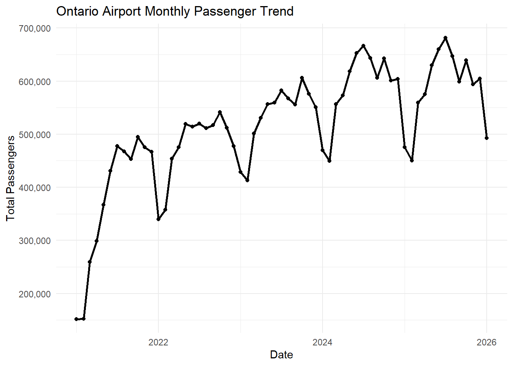
top_airlines_data <- passengers %>%
filter(airline %in% top_10_airlines$airline) %>%
group_by(airline) %>%
summarise(total_passengers = sum(passengers, na.rm = TRUE), .groups = "drop") %>%
arrange(desc(total_passengers))
ggplot(top_airlines_data, aes(x = reorder(airline, total_passengers), y = total_passengers)) +
geom_col() +
coord_flip() +
scale_y_continuous(labels = comma) +
labs(
title = "Top 10 Airlines by Total Passengers",
x = "Airline",
y = "Passengers"
) +
theme_minimal()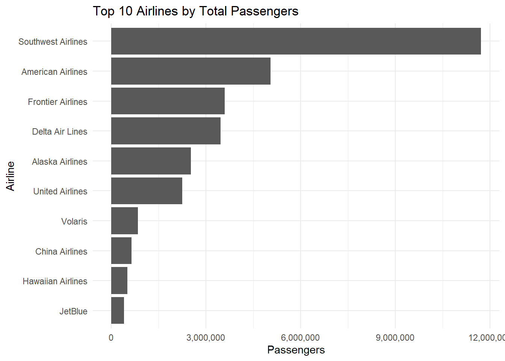
top_5 <- top_10_airlines %>% slice_head(n = 5) %>% pull(airline)
passengers %>%
filter(airline %in% top_5) %>%
group_by(date, airline) %>%
summarise(total_passengers = sum(passengers, na.rm = TRUE), .groups = "drop") %>%
ggplot(aes(x = date, y = total_passengers, linetype = airline)) +
geom_line(linewidth = 1) +
scale_y_continuous(labels = comma) +
labs(
title = "Monthly Passenger Trends for Top 5 Airlines",
x = "Date",
y = "Passengers"
) +
theme_minimal()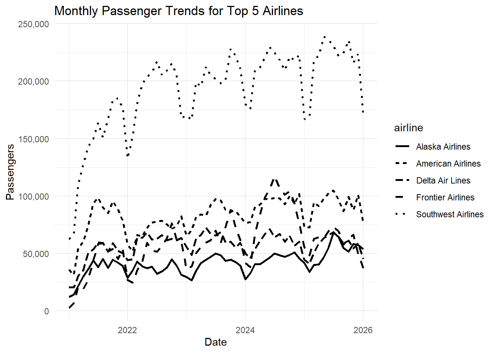
total_metric <- metrics %>%
filter(metric == "Total Passengers") %>%
arrange(date)
print(total_metric)# A tibble: 61 × 8
year month_num month date metric_raw metric value source_sheet
<int> <int> <chr> <date> <chr> <chr> <dbl> <dbl>
1 2021 1 Jan 2021-01-01 Total Passengers Total … 151860 2021
2 2021 2 Feb 2021-02-01 Total Passengers Total … 152293 2021
3 2021 3 Mar 2021-03-01 Total Passengers Total … 259491 2021
4 2021 4 Apr 2021-04-01 Total Passengers Total … 298784 2021
5 2021 5 May 2021-05-01 Total Passengers Total … 366937 2021
6 2021 6 Jun 2021-06-01 Total Passengers Total … 431085 2021
7 2021 7 Jul 2021-07-01 Total Passengers Total … 477966 2021
8 2021 8 Aug 2021-08-01 Total Passengers Total … 467622 2021
9 2021 9 Sep 2021-09-01 Total Passengers Total … 453174 2021
10 2021 10 Oct 2021-10-01 Total Passengers Total … 494727 2021
# ℹ 51 more rowsggplot(total_metric, aes(x = date, y = value)) +
geom_line(linewidth = 1) +
geom_point() +
scale_y_continuous(labels = comma) +
labs(
title = "Official Total Passenger Metric Over Time",
x = "Date",
y = "Passengers"
) +
theme_minimal()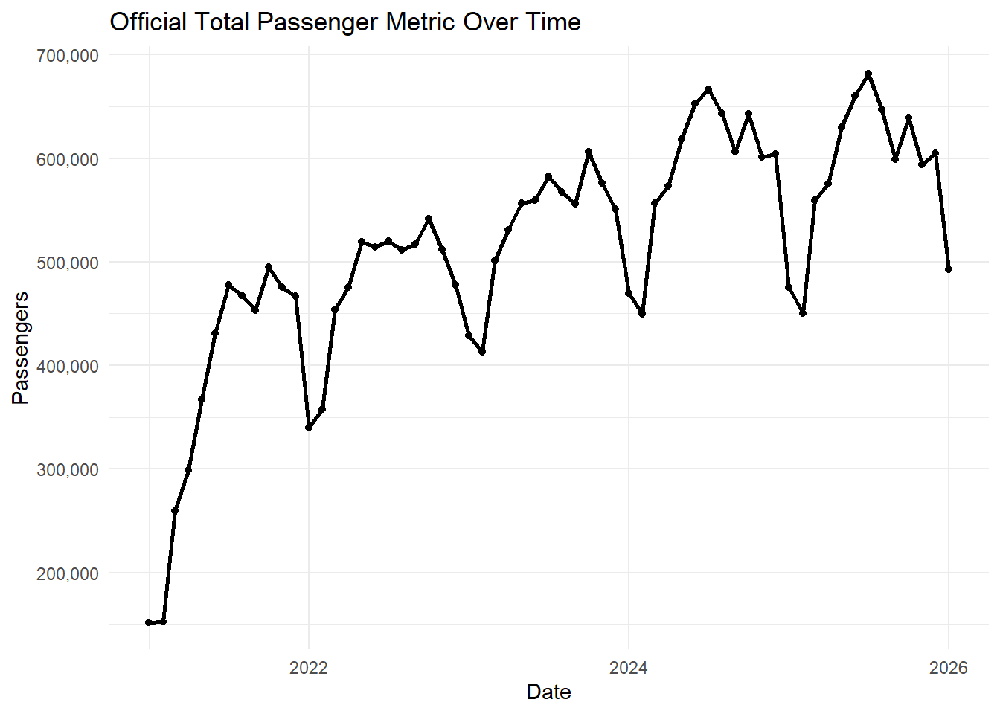
baseline_data <- monthly_total %>%
mutate(
time_index = row_number(),
month_factor = factor(month_num)
)
baseline_model <- lm(total_passengers ~ time_index + month_factor, data = baseline_data)
summary(baseline_model)
Call:
lm(formula = total_passengers ~ time_index + month_factor, data = baseline_data)
Residuals:
Min 1Q Median 3Q Max
-106198 -14636 8261 27689 62832
Coefficients:
Estimate Std. Error t value Pr(>|t|)
(Intercept) 253558.5 20339.6 12.466 < 2e-16 ***
time_index 4499.1 320.8 14.027 < 2e-16 ***
month_factor2 -5919.0 26366.5 -0.224 0.823330
month_factor3 91241.9 26348.9 3.463 0.001134 **
month_factor4 111335.8 26335.2 4.228 0.000105 ***
month_factor5 154317.7 26325.5 5.862 4.07e-07 ***
month_factor6 174922.6 26319.6 6.646 2.57e-08 ***
month_factor7 192793.2 26317.6 7.326 2.33e-09 ***
month_factor8 169809.1 26319.6 6.452 5.10e-08 ***
month_factor9 144257.2 26325.5 5.480 1.55e-06 ***
month_factor10 178552.5 26335.2 6.780 1.60e-08 ***
month_factor11 140662.2 26348.9 5.338 2.52e-06 ***
month_factor12 125372.2 26366.5 4.755 1.85e-05 ***
---
Signif. codes: 0 '***' 0.001 '**' 0.01 '*' 0.05 '.' 0.1 ' ' 1
Residual standard error: 43460 on 48 degrees of freedom
Multiple R-squared: 0.8826, Adjusted R-squared: 0.8532
F-statistic: 30.06 on 12 and 48 DF, p-value: < 2.2e-16baseline_data$predicted_baseline <- predict(baseline_model, newdata = baseline_data)
ggplot(baseline_data, aes(x = date)) +
geom_line(aes(y = total_passengers, linetype = "Actual"), linewidth = 1) +
geom_line(aes(y = predicted_baseline, linetype = "Baseline Prediction"), linewidth = 1) +
scale_y_continuous(labels = comma) +
labs(
title = "Actual vs Baseline Predicted Passengers",
x = "Date",
y = "Passengers",
linetype = ""
) +
theme_minimal()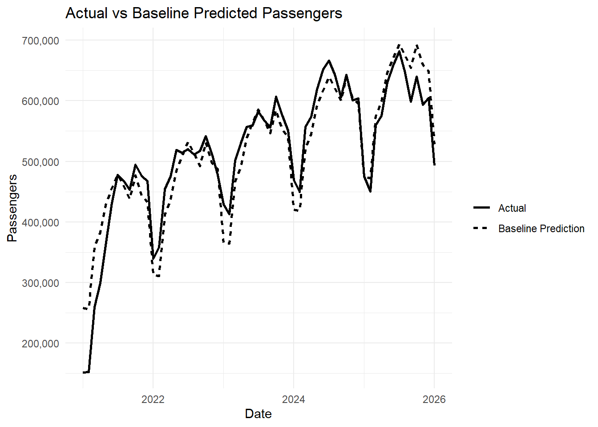
Since your current data does not yet include: - sentiment - engagement - behavior we create proxy scenario variables manually.
simulation_data <- baseline_data %>%
mutate(
# Placeholder proxy inputs (edit these later)
engagement_score = 50, # 0 to 100
sentiment_score = 0.10, # -1 to +1
behavior_score = 0.20 # 0 to 1
)estimated uplift = engagement effect + sentiment effect + behavior effect
simulation_data <- simulation_data %>%
mutate(
estimated_uplift_pct =
(engagement_score * 0.0015) +
(sentiment_score * 0.08) +
(behavior_score * 0.12),
simulated_passengers = predicted_baseline * (1 + estimated_uplift_pct)
)
print(simulation_data %>%
select(date, total_passengers, predicted_baseline, estimated_uplift_pct, simulated_passengers))# A tibble: 61 × 5
date total_passengers predicted_baseline estimated_uplift_pct
<date> <dbl> <dbl> <dbl>
1 2021-01-01 151860 258058. 0.107
2 2021-02-01 152293 256638. 0.107
3 2021-03-01 259491 358298. 0.107
4 2021-04-01 298784 382891. 0.107
5 2021-05-01 366937 430372. 0.107
6 2021-06-01 431085 455476. 0.107
7 2021-07-01 477966 477846. 0.107
8 2021-08-01 467622 459361. 0.107
9 2021-09-01 453174 438308. 0.107
10 2021-10-01 494727 477102. 0.107
# ℹ 51 more rows
# ℹ 1 more variable: simulated_passengers <dbl>ggplot(simulation_data, aes(x = date)) +
geom_line(aes(y = predicted_baseline, linetype = "Baseline"), linewidth = 1) +
geom_line(aes(y = simulated_passengers, linetype = "Simulated Strategy Impact"), linewidth = 1) +
scale_y_continuous(labels = comma) +
labs(
title = "Simulation of Future Community Engagement Impact",
x = "Date",
y = "Passengers",
linetype = ""
) +
theme_minimal()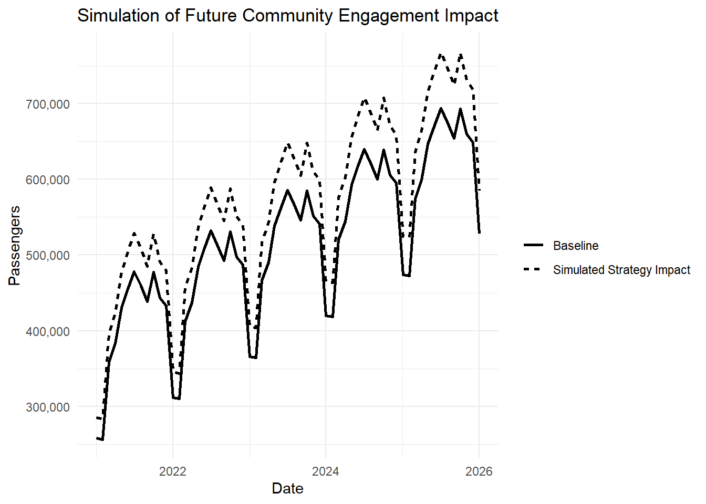
Best case, moderate case, conservative case
scenarios <- tibble(
scenario = c("Conservative", "Moderate", "Best Case"),
engagement_score = c(40, 60, 80),
sentiment_score = c(0.05, 0.12, 0.20),
behavior_score = c(0.10, 0.20, 0.35)
)
scenario_results <- scenarios %>%
mutate(
estimated_uplift_pct =
(engagement_score * 0.0015) +
(sentiment_score * 0.08) +
(behavior_score * 0.12)
) %>%
crossing(baseline_data %>% select(date, predicted_baseline)) %>%
mutate(
simulated_passengers = predicted_baseline * (1 + estimated_uplift_pct)
)
print(scenario_results)# A tibble: 183 × 8
scenario engagement_score sentiment_score behavior_score estimated_uplift_pct
<chr> <dbl> <dbl> <dbl> <dbl>
1 Best Ca… 80 0.2 0.35 0.178
2 Best Ca… 80 0.2 0.35 0.178
3 Best Ca… 80 0.2 0.35 0.178
4 Best Ca… 80 0.2 0.35 0.178
5 Best Ca… 80 0.2 0.35 0.178
6 Best Ca… 80 0.2 0.35 0.178
7 Best Ca… 80 0.2 0.35 0.178
8 Best Ca… 80 0.2 0.35 0.178
9 Best Ca… 80 0.2 0.35 0.178
10 Best Ca… 80 0.2 0.35 0.178
# ℹ 173 more rows
# ℹ 3 more variables: date <date>, predicted_baseline <dbl>,
# simulated_passengers <dbl>ggplot(scenario_results, aes(x = date, y = simulated_passengers, linetype = scenario)) +
geom_line(linewidth = 1) +
scale_y_continuous(labels = comma) +
labs(
title = "Scenario Simulation for Community Engagement Strategies",
x = "Date",
y = "Simulated Passengers",
linetype = "Scenario"
) +
theme_minimal()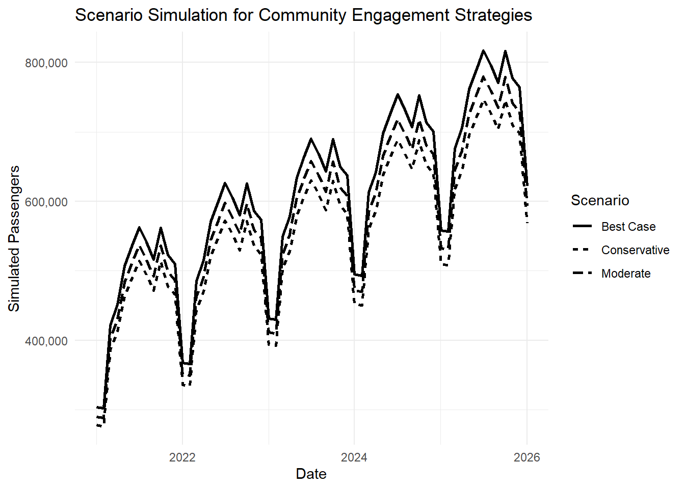
Since real revenue is not in the dataset, create a proxy value per passenger Adjust this assumption based on your project logic
value_per_passenger <- 18
scenario_roi <- scenario_results %>%
mutate(
baseline_value = predicted_baseline * value_per_passenger,
simulated_value = simulated_passengers * value_per_passenger,
incremental_value = simulated_value - baseline_value
) %>%
group_by(scenario) %>%
summarise(
total_baseline_value = sum(baseline_value, na.rm = TRUE),
total_simulated_value = sum(simulated_value, na.rm = TRUE),
total_incremental_value = sum(incremental_value, na.rm = TRUE),
.groups = "drop"
)
print(scenario_roi)# A tibble: 3 × 4
scenario total_baseline_value total_simulated_value total_incremental_va…¹
<chr> <dbl> <dbl> <dbl>
1 Best Case 564509304 664991960. 100482656.
2 Conservative 564509304 607412011. 42902707.
3 Moderate 564509304 634282654. 69773350.
# ℹ abbreviated name: ¹total_incremental_valuelibrary(readxl)
library(dplyr)
library(ggplot2)
library(scales)
data <- read_excel("ao4_model_ready_dataset.xlsx")
data <- data %>%
arrange(year, month) %>%
mutate(
date = as.Date(paste(year, month, "01", sep = "-"))
)ggplot(data, aes(x = date, y = total_passengers)) +
geom_line(linewidth = 1) +
geom_point() +
scale_y_continuous(labels = comma) +
labs(
title = "Monthly Passenger Trend",
x = "Date",
y = "Passengers"
) +
theme_minimal()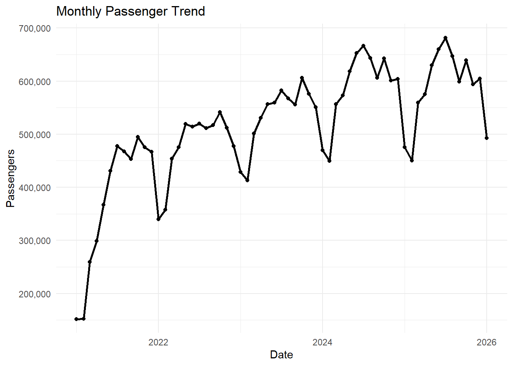
ggplot(data, aes(x = date, y = total_events)) +
geom_line(linewidth = 1) +
geom_point() +
labs(
title = "Community Engagement Activity Over Time",
x = "Date",
y = "Number of Events"
) +
theme_minimal()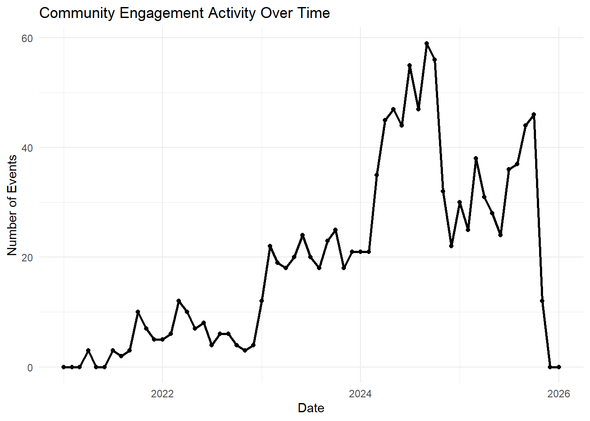
ggplot(data, aes(x = total_events, y = total_passengers)) +
geom_point(size = 3) +
geom_smooth(method = "lm", se = FALSE, linewidth = 1) +
scale_y_continuous(labels = comma) +
labs(
title = "Impact of Community Engagement on Passenger Volume",
x = "Number of Events",
y = "Passengers"
) +
theme_minimal()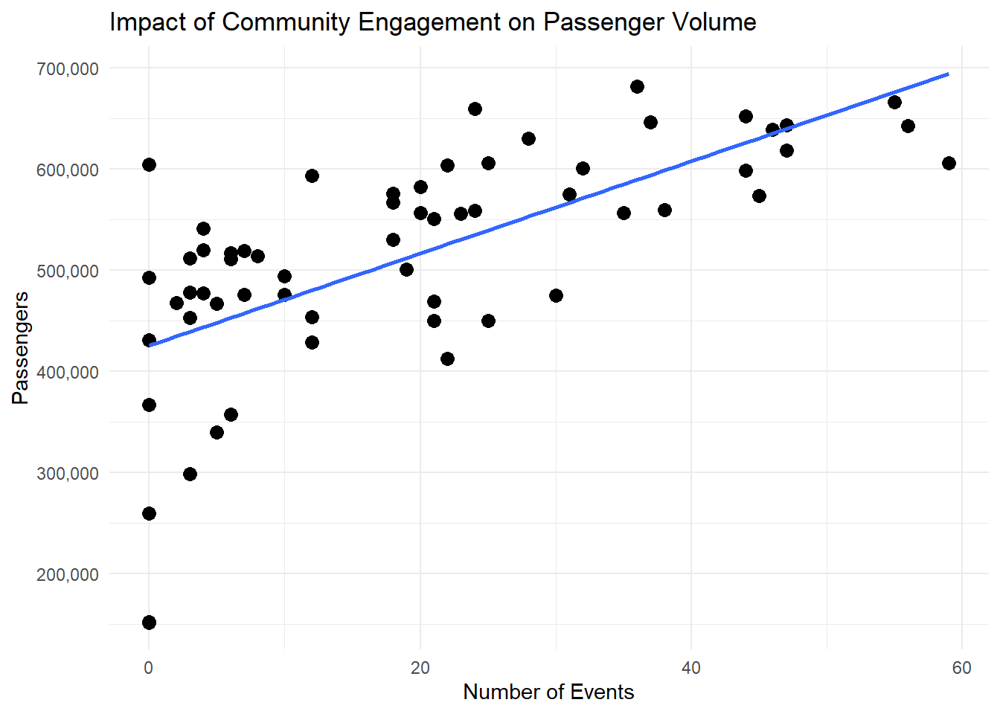
ggplot(data, aes(x = date)) +
geom_line(aes(y = total_passengers, linetype = "Passengers"), linewidth = 1) +
geom_line(aes(y = total_events * 10000, linetype = "Events (scaled)"), linewidth = 1) +
scale_y_continuous(labels = comma) +
labs(
title = "Passengers vs Engagement Activity",
x = "Date",
y = "Passengers",
linetype = ""
) +
theme_minimal()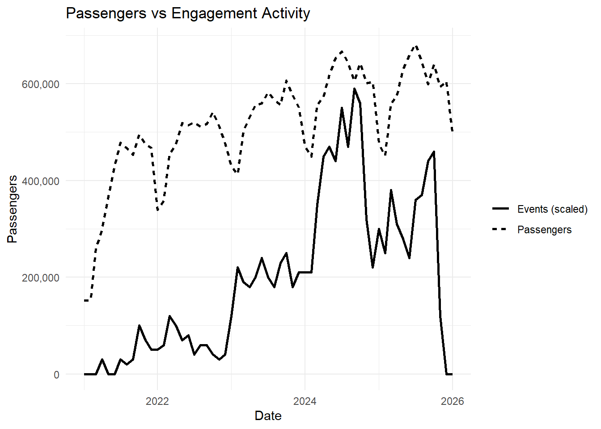
data <- data %>%
mutate(
time_index = row_number(),
month_factor = factor(month)
)
model <- lm(total_passengers ~ total_events + time_index + month_factor, data = data)
data$predicted <- predict(model, newdata = data)
ggplot(data, aes(x = date)) +
geom_line(aes(y = total_passengers, linetype = "Actual"), linewidth = 1) +
geom_line(aes(y = predicted, linetype = "Predicted"), linewidth = 1) +
scale_y_continuous(labels = comma) +
labs(
title = "Actual vs Predicted Passengers",
x = "Date",
y = "Passengers",
linetype = ""
) +
theme_minimal()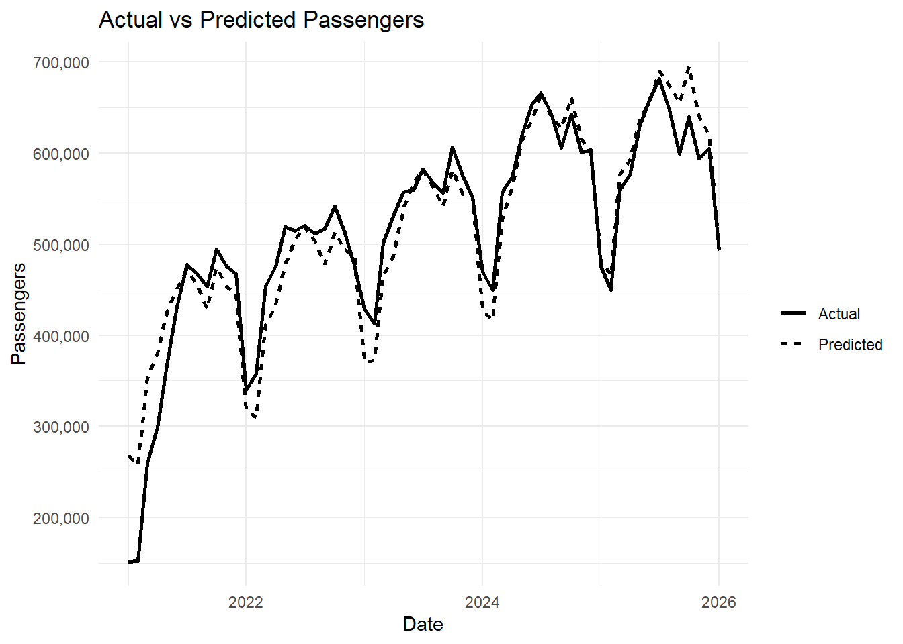
library(dplyr)
library(ggplot2)
library(scales)
data <- data %>%
mutate(
simulated_high = predicted * 1.10,
simulated_low = predicted * 0.95
)
ggplot(data, aes(x = date)) +
geom_line(aes(y = predicted, color = "Baseline", linetype = "Baseline"), linewidth = 1) +
geom_line(aes(y = simulated_high, color = "High Engagement", linetype = "High Engagement"), linewidth = 1) +
geom_line(aes(y = simulated_low, color = "Low Engagement", linetype = "Low Engagement"), linewidth = 1) +
scale_color_manual(values = c(
"Baseline" = "black",
"High Engagement" = "blue",
"Low Engagement" = "red"
)) +
scale_linetype_manual(values = c(
"Baseline" = "solid",
"High Engagement" = "dashed",
"Low Engagement" = "dotted"
)) +
scale_y_continuous(labels = comma) +
labs(
title = "Simulation of Engagement Strategies",
x = "Date",
y = "Passengers",
color = "Scenario",
linetype = "Scenario"
) +
theme_minimal()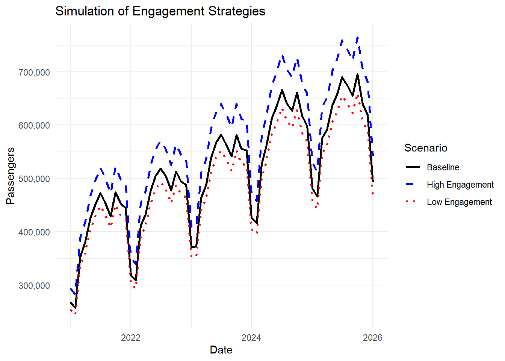
library(readxl)
library(dplyr)
library(ggplot2)
library(scales)
library(stringr)
library(tidyr)ce <- read_excel("FY 24-25 CE Cities-Engagements.xlsx", sheet = "Sheet1")names(ce) <- c(
"city_name",
"county",
"total_visits",
"total_engagements",
"total_presentations",
"total_community_booths",
"leads"
)ce <- ce %>%
mutate(
city_name = str_trim(city_name),
county = str_trim(county),
leads = str_trim(leads),
across(c(total_visits, total_engagements, total_presentations, total_community_booths), as.numeric)
)glimpse(ce)Rows: 51
Columns: 7
$ city_name <chr> "Anaheim", "Arcadia", "Beaumont", "Brea", "Chin…
$ county <chr> "Orange", "Los Angeles", "Orange", "Orange", "S…
$ total_visits <dbl> 13, 15, 1, 15, 22, 25, 12, 1, 15, 8, 8, 10, 12,…
$ total_engagements <dbl> 345, 2465, 75, 194, 1313, 3380, 600, 1850, 201,…
$ total_presentations <dbl> 1, 0, 1, 0, 5, 4, 3, 0, 1, 1, 2, 0, 1, 0, 1, 0,…
$ total_community_booths <dbl> 0, 2, 0, 1, 4, 4, 2, 1, 0, 0, 1, 0, 0, 0, 1, 0,…
$ leads <chr> "Sadie", "Sadie", "N/A", "Connie", "Emily", "Sa…summary(ce) city_name county total_visits total_engagements
Length:51 Length:51 Min. : 1.000 Min. : 5.0
Class :character Class :character 1st Qu.: 2.000 1st Qu.: 71.5
Mode :character Mode :character Median : 7.000 Median : 212.0
Mean : 8.627 Mean : 659.6
3rd Qu.:12.500 3rd Qu.: 554.0
Max. :37.000 Max. :8555.0
total_presentations total_community_booths leads
Min. :0.0000 Min. :0.0000 Length:51
1st Qu.:0.0000 1st Qu.:0.0000 Class :character
Median :1.0000 Median :0.0000 Mode :character
Mean :0.9608 Mean :0.7451
3rd Qu.:1.0000 3rd Qu.:1.0000
Max. :5.0000 Max. :8.0000 overall_summary <- ce %>%
summarise(
total_cities = n(),
total_visits = sum(total_visits, na.rm = TRUE),
total_engagements = sum(total_engagements, na.rm = TRUE),
total_presentations = sum(total_presentations, na.rm = TRUE),
total_booths = sum(total_community_booths, na.rm = TRUE),
avg_engagements_per_city = mean(total_engagements, na.rm = TRUE)
)
print(overall_summary)# A tibble: 1 × 6
total_cities total_visits total_engagements total_presentations total_booths
<int> <dbl> <dbl> <dbl> <dbl>
1 51 440 33641 49 38
# ℹ 1 more variable: avg_engagements_per_city <dbl>top_cities <- ce %>%
arrange(desc(total_engagements)) %>%
select(city_name, county, total_engagements, total_visits, total_presentations, total_community_booths) %>%
slice_head(n = 10)
print(top_cities)# A tibble: 10 × 6
city_name county total_engagements total_visits total_presentations
<chr> <chr> <dbl> <dbl> <dbl>
1 Ontario San Be… 8555 37 0
2 Claremont Los An… 3380 25 4
3 Pomona Los An… 2999 5 0
4 Arcadia Los An… 2465 15 0
5 Costa Mesa Orange 1850 1 0
6 Lake Elsinore Rivers… 1314 9 3
7 Chino/ Chino Hills San Be… 1313 22 5
8 Los Angeles Los An… 1290 3 0
9 Eastvale Rivers… 1017 8 2
10 Murrieta/Wildomar Rivers… 876 14 1
# ℹ 1 more variable: total_community_booths <dbl>county_summary <- ce %>%
group_by(county) %>%
summarise(
cities = n(),
total_visits = sum(total_visits, na.rm = TRUE),
total_engagements = sum(total_engagements, na.rm = TRUE),
total_presentations = sum(total_presentations, na.rm = TRUE),
total_booths = sum(total_community_booths, na.rm = TRUE),
avg_engagements_per_city = mean(total_engagements, na.rm = TRUE),
.groups = "drop"
) %>%
arrange(desc(total_engagements))
print(county_summary)# A tibble: 6 × 7
county cities total_visits total_engagements total_presentations total_booths
<chr> <int> <dbl> <dbl> <dbl> <dbl>
1 Los An… 16 131 11998 11 10
2 San Be… 12 120 11799 18 13
3 Rivers… 13 106 5858 12 10
4 Orange 8 81 3931 8 5
5 N/A 1 1 40 0 0
6 Santa … 1 1 15 0 0
# ℹ 1 more variable: avg_engagements_per_city <dbl>lead_summary <- ce %>%
mutate(leads = ifelse(is.na(leads) | leads == "", "Unknown", leads)) %>%
group_by(leads) %>%
summarise(
cities = n(),
total_visits = sum(total_visits, na.rm = TRUE),
total_engagements = sum(total_engagements, na.rm = TRUE),
total_presentations = sum(total_presentations, na.rm = TRUE),
total_booths = sum(total_community_booths, na.rm = TRUE),
.groups = "drop"
) %>%
arrange(desc(total_engagements))
print(lead_summary)# A tibble: 9 × 6
leads cities total_visits total_engagements total_presentations total_booths
<chr> <int> <dbl> <dbl> <dbl> <dbl>
1 ALL 1 37 8555 0 8
2 Emily 7 80 6632 15 6
3 Sadie 5 44 4247 4 4
4 Jenny 7 71 3662 5 7
5 Sadie/… 1 25 3380 4 4
6 Connie 9 111 2406 9 5
7 N/A 11 11 2316 4 2
8 Jordie 9 48 2174 7 2
9 Steph 1 13 269 1 0ce <- ce %>%
mutate(
engagements_per_visit = ifelse(total_visits > 0, total_engagements / total_visits, NA),
presentations_per_visit = ifelse(total_visits > 0, total_presentations / total_visits, NA),
booths_per_visit = ifelse(total_visits > 0, total_community_booths / total_visits, NA)
)
efficiency_summary <- ce %>%
arrange(desc(engagements_per_visit)) %>%
select(city_name, county, total_visits, total_engagements, engagements_per_visit) %>%
slice_head(n = 10)
print(efficiency_summary)# A tibble: 10 × 5
city_name county total_visits total_engagements engagements_per_visit
<chr> <chr> <dbl> <dbl> <dbl>
1 Costa Mesa Orange 1 1850 1850
2 Pomona Los A… 5 2999 600.
3 Los Angeles Los A… 3 1290 430
4 Palm Desert River… 1 250 250
5 Ontario San B… 37 8555 231.
6 Arcadia Los A… 15 2465 164.
7 Lake Elsinore River… 9 1314 146
8 Greater High Des… San B… 5 728 146.
9 Claremont Los A… 25 3380 135.
10 Eastvale River… 8 1017 127.ce <- ce %>%
mutate(
engagement_score =
(total_engagements * 1.0) +
(total_presentations * 50) +
(total_community_booths * 40) +
(total_visits * 10)
)
score_summary <- ce %>%
arrange(desc(engagement_score)) %>%
select(city_name, county, engagement_score, total_engagements, total_visits) %>%
slice_head(n = 10)
print(score_summary)# A tibble: 10 × 5
city_name county engagement_score total_engagements total_visits
<chr> <chr> <dbl> <dbl> <dbl>
1 Ontario San Berna… 9245 8555 37
2 Claremont Los Angel… 3990 3380 25
3 Pomona Los Angel… 3089 2999 5
4 Arcadia Los Angel… 2695 2465 15
5 Chino/ Chino Hills San Berna… 1943 1313 22
6 Costa Mesa Orange 1900 1850 1
7 Lake Elsinore Riverside 1634 1314 9
8 Los Angeles Los Angel… 1400 1290 3
9 Placentia Orange 1249 809 21
10 Eastvale Riverside 1237 1017 8ggplot(top_cities, aes(x = reorder(city_name, total_engagements), y = total_engagements)) +
geom_col() +
coord_flip() +
scale_y_continuous(labels = comma) +
labs(
title = "Top 10 Cities by Total Engagements",
x = "City",
y = "Total Engagements"
) +
theme_minimal()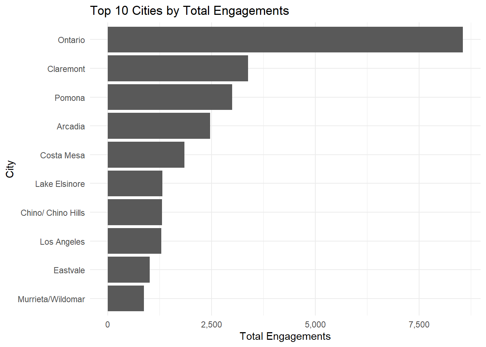
ggplot(county_summary, aes(x = reorder(county, total_engagements), y = total_engagements)) +
geom_col() +
coord_flip() +
scale_y_continuous(labels = comma) +
labs(
title = "Total Engagements by County",
x = "County",
y = "Total Engagements"
) +
theme_minimal()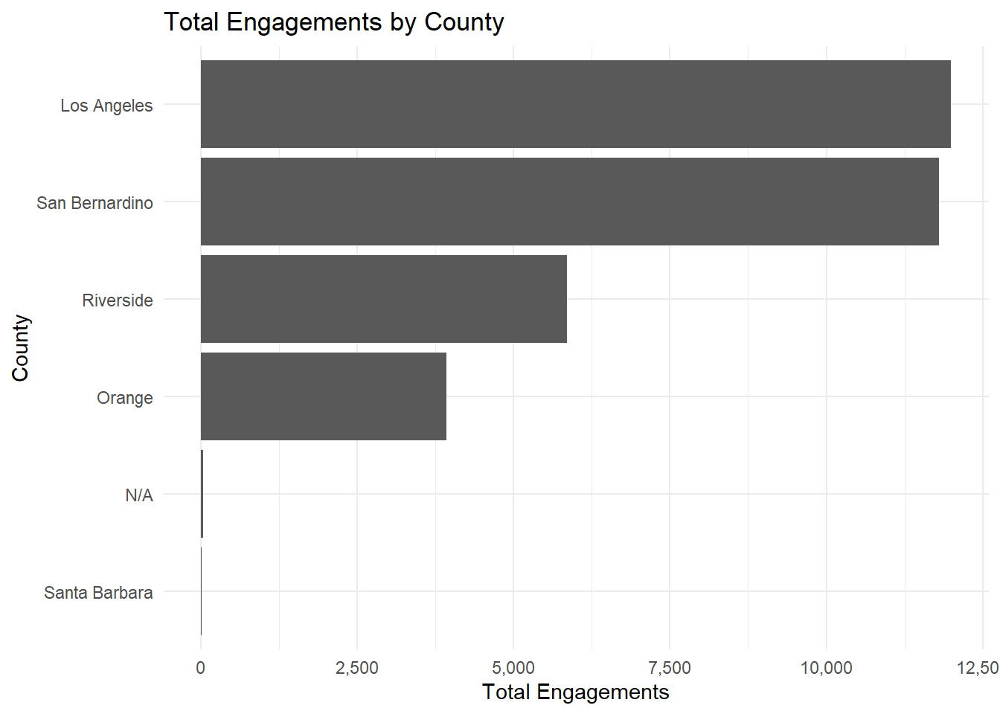
ggplot(ce, aes(x = total_visits, y = total_engagements)) +
geom_point(size = 3) +
geom_smooth(method = "lm", se = FALSE, linewidth = 1) +
scale_y_continuous(labels = comma) +
labs(
title = "Relationship Between Visits and Engagements",
x = "Total Visits",
y = "Total Engagements"
) +
theme_minimal()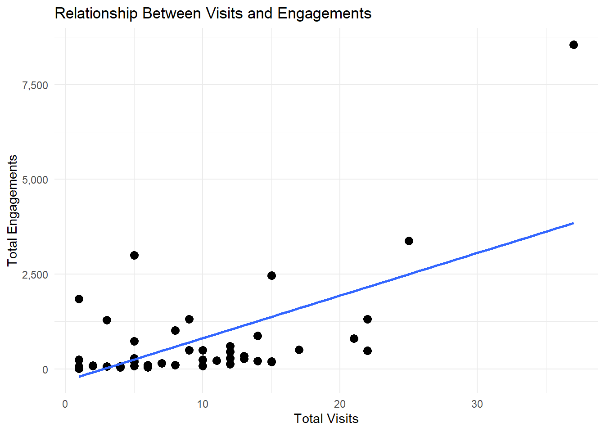
top_score <- ce %>%
arrange(desc(engagement_score)) %>%
slice_head(n = 10)
ggplot(top_score, aes(x = reorder(city_name, engagement_score), y = engagement_score)) +
geom_col() +
coord_flip() +
scale_y_continuous(labels = comma) +
labs(
title = "Top 10 Cities by Weighted Engagement Score",
x = "City",
y = "Engagement Score"
) +
theme_minimal()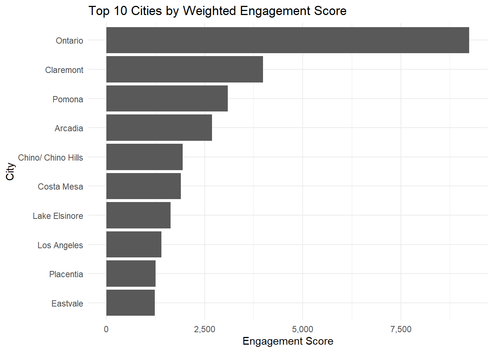
ggplot(lead_summary, aes(x = reorder(leads, total_engagements), y = total_engagements)) +
geom_col() +
coord_flip() +
scale_y_continuous(labels = comma) +
labs(
title = "Total Engagements by Lead",
x = "Lead",
y = "Total Engagements"
) +
theme_minimal()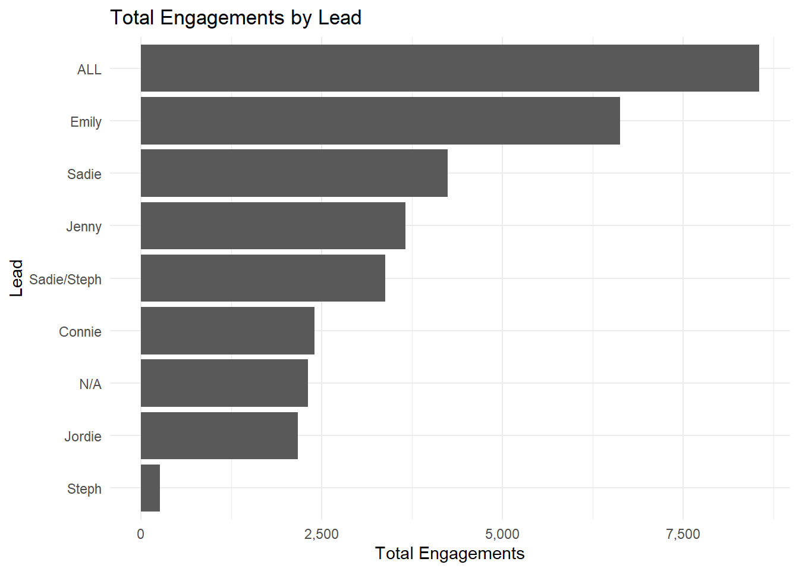
total_engagement <- ce %>%
summarise(
total_engagements = sum(total_engagements, na.rm = TRUE),
total_visits = sum(total_visits, na.rm = TRUE),
total_presentations = sum(total_presentations, na.rm = TRUE),
total_booths = sum(total_community_booths, na.rm = TRUE)
)
print(total_engagement)# A tibble: 1 × 4
total_engagements total_visits total_presentations total_booths
<dbl> <dbl> <dbl> <dbl>
1 33641 440 49 38monthly_engagement <- total_engagement %>%
mutate(
monthly_engagements = total_engagements / 12,
monthly_visits = total_visits / 12,
monthly_presentations = total_presentations / 12,
monthly_booths = total_booths / 12
)
print(monthly_engagement)# A tibble: 1 × 8
total_engagements total_visits total_presentations total_booths
<dbl> <dbl> <dbl> <dbl>
1 33641 440 49 38
# ℹ 4 more variables: monthly_engagements <dbl>, monthly_visits <dbl>,
# monthly_presentations <dbl>, monthly_booths <dbl>months <- data.frame(
month = 1:12,
year = 2025
)
engagement_time <- months %>%
mutate(
total_events = monthly_engagement$monthly_engagements,
visits = monthly_engagement$monthly_visits,
presentations = monthly_engagement$monthly_presentations,
booths = monthly_engagement$monthly_booths
)
print(engagement_time) month year total_events visits presentations booths
1 1 2025 2803.417 36.66667 4.083333 3.166667
2 2 2025 2803.417 36.66667 4.083333 3.166667
3 3 2025 2803.417 36.66667 4.083333 3.166667
4 4 2025 2803.417 36.66667 4.083333 3.166667
5 5 2025 2803.417 36.66667 4.083333 3.166667
6 6 2025 2803.417 36.66667 4.083333 3.166667
7 7 2025 2803.417 36.66667 4.083333 3.166667
8 8 2025 2803.417 36.66667 4.083333 3.166667
9 9 2025 2803.417 36.66667 4.083333 3.166667
10 10 2025 2803.417 36.66667 4.083333 3.166667
11 11 2025 2803.417 36.66667 4.083333 3.166667
12 12 2025 2803.417 36.66667 4.083333 3.166667library(readxl)
passengers <- read_excel("ao4_model_ready_dataset.xlsx")
data <- passengers %>%
left_join(engagement_time, by = c("year", "month"))
head(data)library(readr)
library(dplyr)
library(lubridate)
profile <- read_csv("Profile Performance.csv", show_col_types = FALSE)
colnames(profile) [1] "Date"
[2] "Network"
[3] "Profile"
[4] "Audience"
[5] "Net Audience Growth"
[6] "Audience Gained"
[7] "Sent Messages (Total)"
[8] "Published Posts (Total)"
[9] "Received Messages (Total)"
[10] "Impressions"
[11] "Video Views"
[12] "Engagements"
[13] "Engagement Rate (per Impression)"
[14] "Reactions"
[15] "Comments"
[16] "Shares"
[17] "Post Link Clicks"
[18] "Saves"
[19] "Other Post Clicks"
[20] "Other Engagements"
[21] "Profile Actions"
[22] "Sent posts (X)"
[23] "Sent Quotes (X)"
[24] "Sent @Replies (X)"
[25] "Sent Direct Messages (X)"
[26] "Sent Posts (Facebook)"
[27] "Sent Ad Posts (Facebook)"
[28] "Sent Comments (Facebook)"
[29] "Sent Ad Comments (Facebook)"
[30] "Sent Private Messages (Facebook)"
[31] "Sent Posts (Instagram)"
[32] "Sent Stories (Instagram)"
[33] "Sent Reels (Instagram)"
[34] "Sent Comments (Instagram)"
[35] "Sent Ad Comments (Instagram)"
[36] "Sent Posts (Threads)"
[37] "Sent Quotes (Threads)"
[38] "Sent Comments (Threads)"
[39] "Sent Posts (LinkedIn)"
[40] "Sent Comments (LinkedIn)"
[41] "Sent Direct Messages (LinkedIn)"
[42] "Sent Videos (TikTok)"
[43] "Sent Comments (TikTok)"
[44] "Sent Pins (Pinterest)"
[45] "Sent Saves (Pinterest)"
[46] "Sent Videos (YouTube)"
[47] "Received Mentions (X)"
[48] "Received Direct Messages (X)"
[49] "Received Reposts (X)"
[50] "Received Quotes (X)"
[51] "Received New Follower Alerts (X)"
[52] "Received Wall Posts (Facebook)"
[53] "Received Comments (Facebook)"
[54] "Received Ad Comments (Facebook)"
[55] "Received Private Messages (Facebook)"
[56] "Received Comments (Instagram)"
[57] "Received Ad Comments (Instagram)"
[58] "Received Mentions (Instagram)"
[59] "Received Media Tags (Instagram)"
[60] "Received Posts (Threads)"
[61] "Received Comments (Threads)"
[62] "Received Comments (LinkedIn)"
[63] "Received Direct Messages (LinkedIn)"
[64] "Sent Direct Messages (Instagram)"
[65] "Received Direct Messages (Instagram)"
[66] "Received Comments (TikTok)" head(profile)library(dplyr)
library(lubridate)
profile <- profile %>%
mutate(
date = as.Date(Date, format = "%m-%d-%Y"), # <-- FIXED FORMAT
year = year(date),
month = month(date),
impressions = as.numeric(Impressions),
engagement = as.numeric(Engagements),
comments = as.numeric(Comments),
shares = as.numeric(Shares)
)